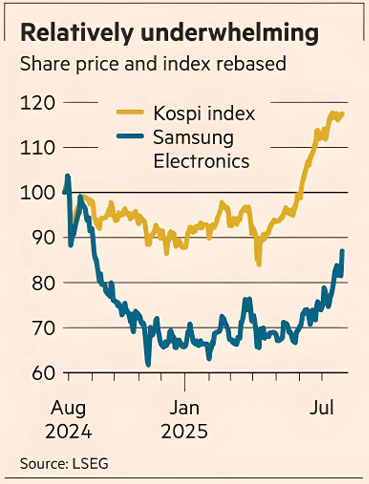

Samsung could use the break. It has roundly disappointed on a couple of quarterly earnings. It fell behind in high bandwidth memory, used to improve efficiency in AI workloads by Nvidia and its ilk, ceding ground to local rival SK Hynix. Its foundry chipmaking business is barely in the rear-view mirror of its bigger Taiwanese rival: TSMC’s 67.6 per cent market share dwarfs Samsung’s 7.7 per cent on TrendForce numbers.
Chip plants depend on a virtuous cycle: the more the customers, the better the yields, the bigger the profit bounty, the greater the reinvestment — and so on. So far, Samsung's foundry business is on the reverse ride.
Particularly needing a helping hand is Samsung’s new Texas plant, which risked becoming a white elephant.
Impressed investors — who had already driven up Samsung’s share price by almost a third this year on turnaround hopes — bumped it up a further 6.4 per cent on the Tesla deal.
That looks premature. For an industry that thrives on big numbers, the eight-year contract is pretty paltry: $2bn a year for a company expected to reap sales of $230bn this year, according to S&P Capital IQ, represents roughly three days’ sales.
Next, it is possible that Musk, in effect limited to a small number of suppliers, is keeping them on their toes. Tesla awarded TSMC the contract for its last generation of chips; the previous AI4 chips are made by Samsung. Indeed, while contract terms are not disclosed, it seems likely that Tesla got a good deal. Samsung would have every incentive to offer sweet terms at a plant operating with plenty of slack. Busier TSMC would have less reason to be similarly accommodating.
True, Tesla brings other perks: a marquee name on the factory to woo other big-name buyers and a side of management consultancy since Musk plans to drop by and assist in maximising production efficiency.
But, by itself, it will fall short of driving a revival. Samsung’s other units, including smartphones, face their own pressures. Recent share price strength, a tad ahead of the broader benchmark of which it is a big chunk, means its price relative to next year’s earnings is now above most peers’.
Only by catching up with rivals’ tech and winning back more big customers can Samsung get back on track.